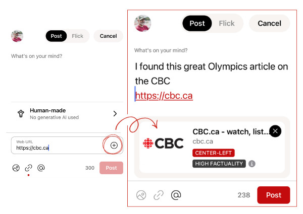

TRUTH & TRANSPARENCY PROTOCOLS
UNOFFICIAL INTELLIGENCE
This guide is maintained by community volunteers. While we aim for accuracy, always cross-reference with GanderSocial.ca.
Media Verification
Gander is designed to combat misinformation by providing real-time context for external links. When you share a news article or website, the "Truth Transponder" automatically pulls data to help the flock assess the signal quality. When you post a link this way, the system checks the source against mediafactcheck.com.

The Link Preview
When you paste a URL (like https://cbc.ca) into a new Honk, Gander generates a smart preview card with two critical verification markers:
- Bias Rating: A visual indicator of the source's political leanings (e.g., CENTER-LEFT). This helps the flock understand the likely perspective of the coverage.
- Factuality Score: A rating of the source's track record for accuracy (e.g., HIGH FACTUALITY).
How to deploy a varified link
- Paste the URL: Enter the web address directly into the post composer.
- Activate the Preview: Tap the (+) icon next to the URL input field to generate the verification card.
- Review the Intel: Before hitting Post, check the bias and factuality markers to ensure you are sharing a high-quality signal.
- Add Context: You can still add your own text and hashtags (like #News) above the link to provide your tactical perspective.
Operational Transparency
The little (i) icon next to the factuality score provides a deeper dive into how the rating was determined. Gander uses independent third-party data to ensure these ratings remain neutral and objective.
TACTICAL TIP: SIGNAL VS. NOISE
If a link generates a LOW FACTUALITY or EXTREME BIAS warning, it doesn't mean you can't post it—it just means the flock will see that metadata. This empowers everyone to make their own informed decisions about the intelligence being shared.
UNOFFICIAL BRIEFING
Data based on Release 1.0.1 (109). This is community-observed intelligence.